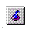
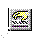
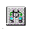

The main screen displays any installed licenses
and the status of each license. Click on any column heading (Product, License
Type, Expiration, License Term, and Qty) to sort the information.
If
you see any Disabled menu options, ask your system administrator
to modify your administrator privileges.
The following
list describes the menu bar and command bar at the top of the screen.
- Icons and menu commands
- Perform the following actions:
- Displays titles of buttons on button bar and titles of most
main menu options in the lower left corner of the main screen box.
- Shows all expired node-locked, floating, and served licenses
on the system that you are using.
- Shows all floating licenses on the system that you are using.
- Shows all node-locked licenses that are installed on the
system that you are using.
- Shows all floating licenses that IBM Rational products on
your system could request from the license server.
- If the system has an internet connection, this option connects
you to the Rational support, Licensing page where you can access AccountLink
to request permanent license keys.
-

Opens the License
Key Administrator wizard.

- Opens the License Certificate wizard, enabling you to enter
License Key Certificate information.
- Opens the Import License Key(s) window,
enabling you to import a license key file.
- Displays the hostname and host ID (Disk ID) of your computer.
You need this information to request a permanent license key in AccountLink.

- Launches the Client/Server Configuration window,
that enables you to:
- Specify license servers.
- Enter port numbers (optional).
- Lets you set the order in which a Rational application uses
Rational Suite and point product licenses.
- Server Wait time
- Lets you specify the number of seconds your computer waits to establish
a connection with each server when searching for licenses.
- Lets you enter the lmgrd port and the Vendor port on the
license server.
- Specifies whether you want to receive warnings about license
key expirations. Do not routinely disable expiration warnings. This should
only be done when batch processes might not run correctly with license expiration
messages popping up.
- Launches the Display Colors window.
You can select the display color for permanent, served, expired, temporary,
Term License Agreement (TLA), and invalid licenses.
- Clears the "Don't show this..." check
box. Lets the License Key Administrator wizard and other windows
open again.
- Displays the version information for the License Key Administrator.